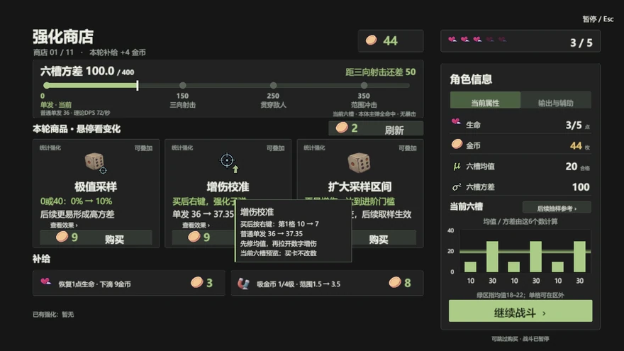
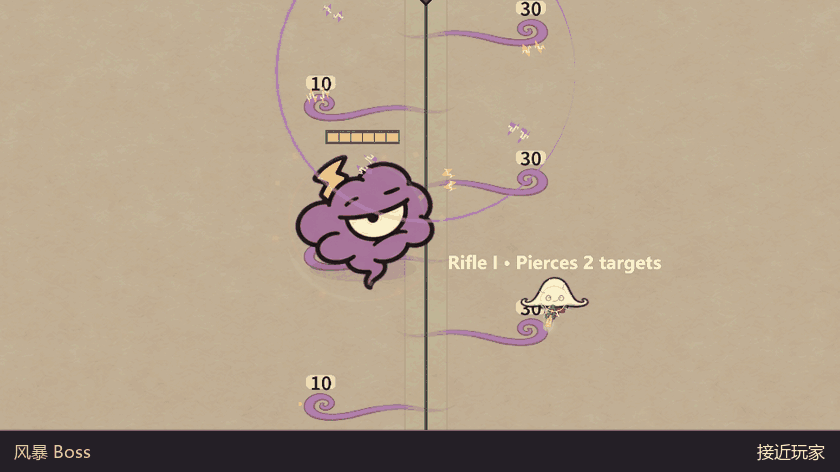
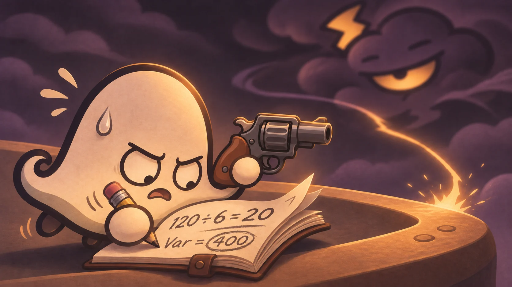

保留贯穿赏金
Ⅱ 档步枪- 本枪赏金
- +2
 −35
−35- −21
 −21
−21
你操控的小高斯，是一条拿着枪的钟形曲线。让样本集中，步枪就能一枪贯穿一列敌人。让样本分散，霰弹就能向四周环射。



WASD 移动，鼠标瞄准，按住左键射击，右键校准。
StatsShooter 是一款类幸存者的 2D 俯视角肉鸽射击游戏。
六个样本的均值在 18–22 之间时，普通射击才能造成直接伤害。方差越低，步枪贯穿越强。方差越高，霰弹覆盖越广。
 低方差步枪
低方差步枪 高方差霰弹枪
高方差霰弹枪我在大学主修统计学，觉得一些知识只停留在公式与计算中时，容易显得抽象。我也喜欢肉鸽中尝试新组合、发现不同玩法的过程。StatsShooter 把这两种兴趣结合起来：改变数据分布，就能改变武器表现。我希望玩家通过选牌与战斗反馈，逐渐建立对均值和方差的直觉。

两条曲线都以 20 为中心。方差越大，数值越分散，曲线越矮、越宽，小高斯也随之变形。

击败敌人赚金币，倒计时结束后进商店。
命中替换一格，打空保留原值。
六格的平均值在这个范围内，普通射击才有基础直伤。
取值越集中，步枪贯穿越强。越分散，霰弹覆盖越广。
系统自动选一格调整，让均值尽量接近 20。
其余五格始终为 20。
直伤生效
后续直伤暂停
直伤恢复
改变均值的这次命中仍会造成伤害。
紧追玩家，贴身扣血。
把一格样本推离均值，可能使均值出界，也可能帮助霰弹升档。
落雷暂时锁住校准，最好在雷击前修正均值。
改写一格样本。校准时还要保住武器档位。


同样一枪贯穿三名敌人，留贯穿赏金能多赚 2 金币，留八次平均能让后两名敌人也吃满伤害。
−35−21−40−40样本越集中，步枪贯穿越强，适合连续击中排成一线的敌人。
样本越分散，霰弹覆盖越广，逐步从扇射变为环射，应对四周敌人。
用高方差霰弹点燃追兵。均值出界时，校准能召来分身，和你一起朝敌群开火。

 火花
火花
命中点燃敌人，均值出界后燃烧仍会持续。
 余烬播撒
余烬播撒
霰弹和燃烧的敌人沿途留下地火。
 余烬复燃
余烬复燃
地火更宽、持续更久，能封住追兵的路线。
 极值分身
极值分身
校准增加分身，集火同一目标可叠加燃烧。
让六个样本保持集中，稳住步枪的贯穿档位。把追兵引到反弹路径上，让同一发子弹再次穿过敌群。

 折射弹
折射弹
子弹碰墙后反弹一次。
 双壁回路
双壁回路
可连续反弹两次。
 棱镜回廊
棱镜回廊
连续反弹让贯穿弹横穿更大的区域。
 双发折射或墙面余辉
双发折射或墙面余辉
最后一槽可增加反弹弹道，或让墙边的敌人减速。
自动测试已核对预览与结算。玩家能否据此选准校准时机，仍待试玩验证。
回顾整个游戏，我认为我对构筑成型后的效果考虑得比较充分，却把成长路线安排得过于明确。清晰的目标帮助我组织了设计，也限制了随机内容对玩法方向的影响。作为一款肉鸽游戏，局与局之间的变化仍然不足，玩家中途调整策略、尝试新组合的空间有限，探索构筑的乐趣没有得到充分发挥。
统计元素的融合也存在不足。我更关注统计概念与战斗表现之间的对应，对玩家为什么需要理解这些概念、如何利用它们作出选择，考虑得还不够。这让我意识到，统计知识在规则中发挥作用，并不等于它已经充分融入游玩体验。我对“寓教于乐”的理解，也从呈现知识，进一步转向了让知识参与玩家的判断、取舍和探索。